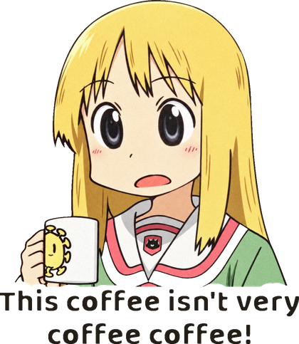
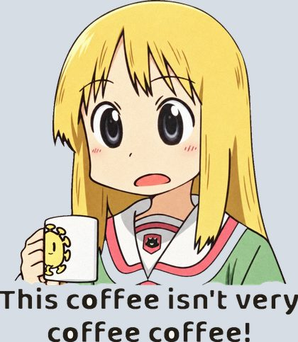

同一张抠图，同一个位置，同样的宽。左边是一张贴上去的贴纸：等宽白边、纸面颗粒、贴着纸的软投影、歪 −8°。右边是粘进去的截图：矩形底色、零边、零影、零角度——一眼看出是后加的。

✓ 贴纸：它是本子上的一个物件
✗ 截图：它是一块后加的矩形#edgefeMorphology operator="dilate" radius="7" 作用在 SourceAlpha 上，白边宽 = radius = 7px（贴纸宽 240px 的约 3%）；再 feGaussianBlur stdDeviation="1.5" + feFuncA slope=6 intercept=-2.4 把方核尖角磨圆；填色 #fffdf8（暖白，纯 #fff 在米色纸上发蓝）。filter 区域放到 130%，否则白边被裁。#shadowdrop-shadow(0 4px 10px rgba(0,0,0,.15))，写在 url(#diecut) 之后，阴影才跟着白边外轮廓走而不是跟着人物走。不要 box-shadow（矩形影 = 截图感）；不要大于 .2 的不透明度、大于 6px 的 y 偏移（会变成浮起的卡片）。#tiltrotate(-8deg)。可用区间 −12deg…−4deg 或 4deg…12deg；0deg 像排版，大于 15deg 像掉了。一页多张贴纸时正负交替、每张差 3deg 以上。#scale#grainfeTurbulence type="fractalNoise" baseFrequency=".9" numOctaves="2"，只 composite 进白边 ring，不碰人物；可见度 feFuncA slope=".1"（0.06–0.14 之间）。肉眼第一眼看不出、200% 才看出纸感为对。机器可读参数见页内 <script type="application/json" id="params">；来源、原理与专家检查见同目录 README.md。